I will repeat once again. Two things are crucial in price action trading – 1) Identifying key price levels, and 2) Confirmation or Rejection of the price, to look for any profitable trade opportunities.
In the last chapter, we have covered different aspects of identifying key price levels using trend lines. This chapter focuses on 10 powerful candlestick patterns used for confirmation/rejection of the price at key price levels.
Please note, we are not supposed to use these patterns independently. We need to check for these patterns only at the key price levels.
There are 1000s of candlestick patterns present in the world of technical analysis. Do you think studying and memorizing all of them is practically possible?
Heck, No! isn’t it? Then what is a better way to shortlist them?
It's better to shortlist the candlestick patterns based on two parameters:
Because if a candlestick pattern has less impact, then it is not useful. Similarly, if a candlestick pattern is powerful, but if it rarely occurs, then again, it is of no use. Is it?
Considering these two parameters, below are some powerful patterns that occur very frequently on all the timeframes.
Engulfing candles tend to signal a reversal of the current trend/swing in the market. It involves two candles, with the latter candle 'engulfing' the previous candle's entire body.
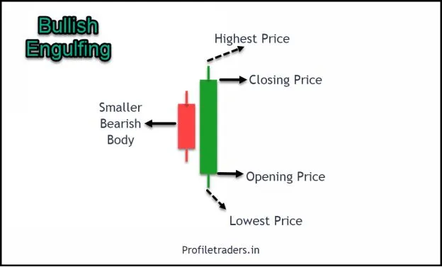
Image 4.1 – Bullish Engulfing Pattern
In the bullish engulfing pattern, the first candle will be a small bearish candle. The second candle opens below the first bearish candle, trades lower than the bearish candle, but due to the entry of powerful bulls, it will witness a close above the bearish candle. Hence, it engulfs the first bearish candle. It is 'bullish' in nature.
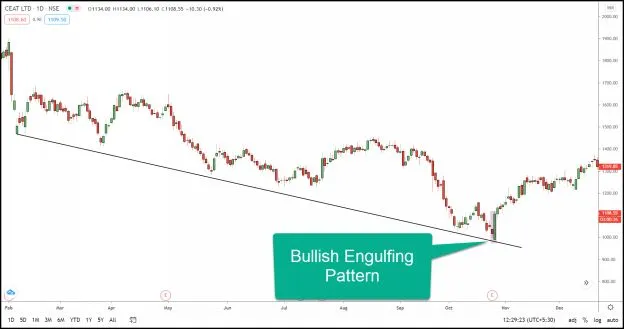
Image 4.2 – Bullish Engulfing Pattern in CEAT LTD
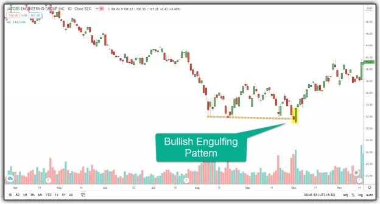
Image 4.3 – Bullish Engulfing Pattern in Jacobs Engineering
Image 4.2 and 4.3 are examples of Bullish Engulfing. The price is in downtrend/swing, and the bullish engulfing pattern appeared at the support trend line. The price rallied on the upside after displaying the bullish engulfing pattern.
Engulfing candles tend to signal a reversal of the current trend/swing in the market. It involves two candles, with the latter candle 'engulfing' the previous candle's entire body.
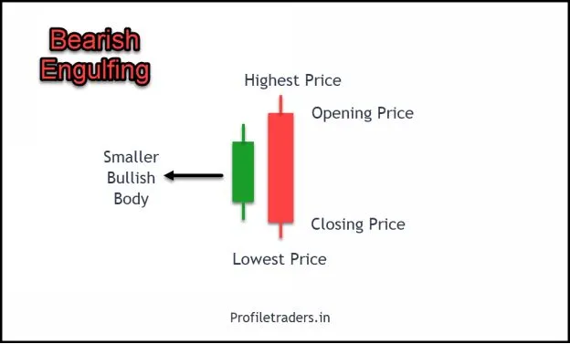
Image 4.4– Bearish Engulfing Pattern
In the bearish engulfing pattern, the first candle will be a small bullish candle. The second candle opens above the first bullish candle, trades higher than the bullish candle. Still, due to the entry of powerful sellers, it will witness a close below the bullish candle. Hence, it engulfs the first bullish candle. It is 'bearish' in nature.
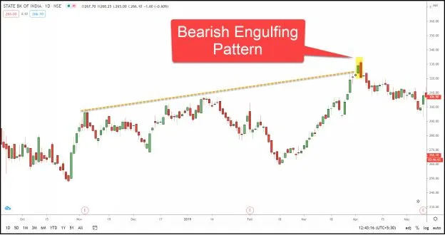
Image 4.5– Bearish Engulfing Pattern in SBIN
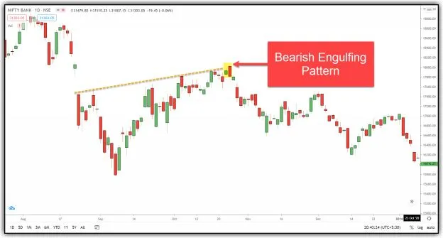
Image 4.6– Bearish Engulfing Pattern in Bank Nifty
Images 4.5 and 4.6 are examples of Bearish Engulfing. The price was in an uptrend/swing, and the bearish engulfing pattern appeared at the resistance trend line. The price fell after forming the bearish engulfing pattern.
When a stock price trades significantly lower than the open price, it bounces back due to the sudden entry of bulls. It closes a little below or above the open price, which results in the Hammer pattern.
If it occurs at a critical support level, then there is a high probability of reversal in the price chart.
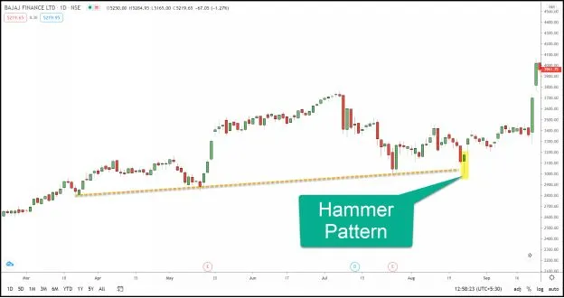
Image 4.7 – Hammer Pattern in Bajaj Finance
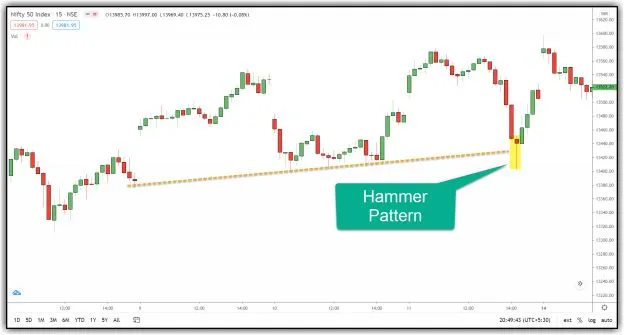
Image 4.8 – Hammer Pattern in Nifty
Images 4.7 and 4.8 are examples of a hammer pattern. It derived its name as the shape looks like a hammer. In this pattern, the lower shadow is at least twice the size of the real body.
It looks similar to the Hammer pattern. However, it occurs at the end of the uptrend and resembles a hanging man from the top. Hence, it's gets its name. It indicates the potential reversal of the price from the uptrend.
If it occurs at a critical resistance level, then there is a high probability of reversal in the price.
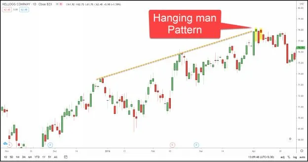
Image 4.9 – Hanging Man Pattern in KELLOGG
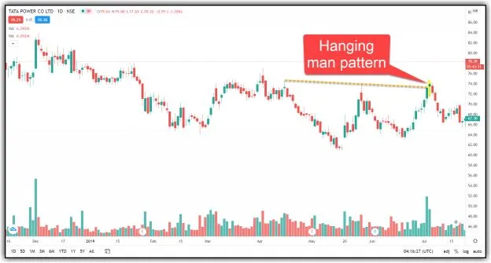
Image 4.10 – Hanging Man Pattern in TATA Power
In image 4.9, the price was in an uptrend, and the price displayed the hanging man precisely at the resistance line. In image 4.10, the trend was down, but the hanging man appeared at the upswing within the downtrend.
It indicates that the buyers have lost their strength to push the price to the upside. Hence, there is a higher probability of price reversing from that level.
Like Engulfing, we have two 'Harami’ patterns – 1) Bullish Harami and 2) Bearish Harami.
The word ‘Harami’ means a pregnant lady in the Japanese language. This pattern appears like a pregnant lady, and hence it got this name.
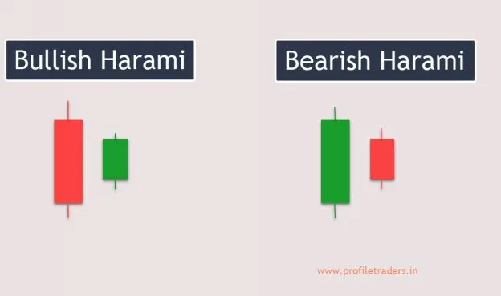
Image 4.11 – Bullish Harami and Bearish Harami
Bullish Harami includes a big bearish candle first, followed by a small bullish candle in the middle. It indicates that the selling is over, and there is a high probability of the price going upward.
Bearish Harami includes a big bullish candle first, followed by a small bearish candle in the middle. It indicates that the buying is over, and there is a high probability of price going in the downside direction.
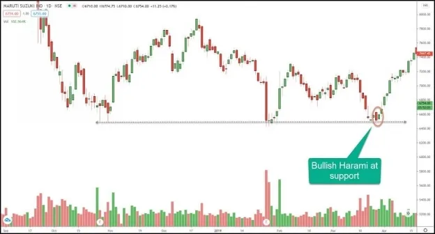
Image 4.12 – Bullish Harami in Maruti
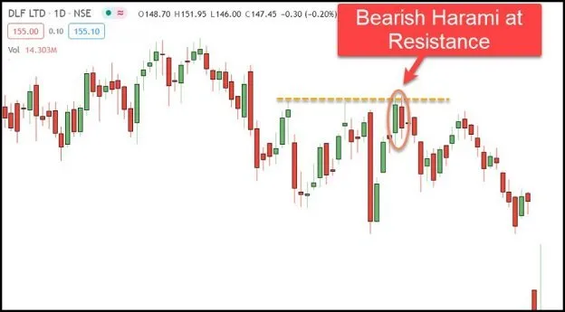
Image 4.13 – Bearish Harami in DLF
The images-4.12 and 4.13 show examples for Bullish Harami and Bearish Harami pattern respectively.
A morning star pattern consists of three candlesticks, which occur in a downtrend and often indicate the beginning of the uptrend.
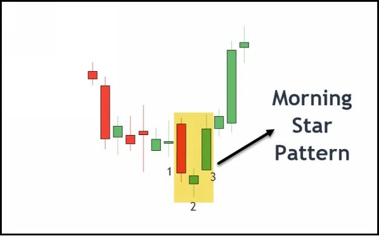
Image 4.14 – Morning Star Pattern
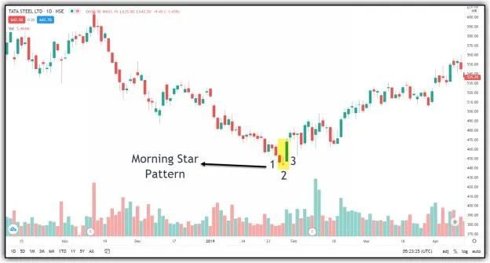
Image 4.15 – Morning Star Pattern in TATA Steel
It consists of 1-2-3 formation in a downtrend, indicating the sign of a change in the trend. The first candle is bearish, and the second candle indicates indecision, and the third candle indicates the bullish behavior of the price.
It is similar to Morning Star but in the opposite direction. Again this pattern consists of three candlesticks that occur in an uptrend and indicate the beginning of the downtrend.
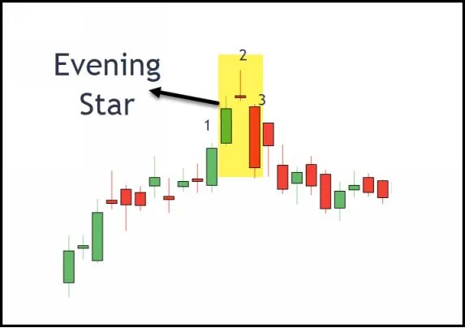
Image 4.16 – Evening Star Pattern
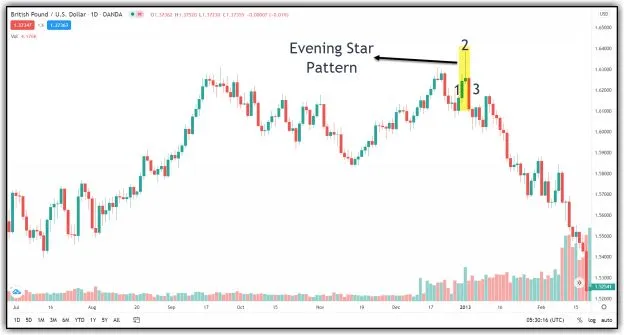
Image 4.17 – Evening Star Pattern in GBP-USD
Similar to Morning Star, this pattern also consists of a 1-2-3 formation but in the opposite direction. It indicates sign of a downtrend. The first candle is bullish, the second candle indicates indecision, and the third candle indicates the bearish behavior of the price.
In a Doji pattern, the open and close prices will be nearly equal for the selected time period. It is a neutral pattern that indicates indecision.
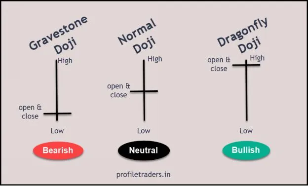
Image 4.18 – Doji Pattern
The above image shows different variations of Doji. In all three types, the price closed at the open level. However, based on the location of open/close, it is possible to identify the sentiment behind it.
In Gravestone Doji, the open & price level will be at the bottom. It indicates that buyers attempted to push the price upside in this period, but they lacked the power to drive the price upside. Hence, it closed at the same open level. We can expect only a downside move until the price negates this pattern.
In Dragonfly Doji, the situation is precisely the opposite. In this case, sellers tried to push the price downside, but they failed, and hence price closed at the top. Therefore, we can expect only an upside move until the price negates this pattern.
In Normal Doji (also called Long Legged Doji), there is not much clarity in the price. Besides, it also indicates the equal fight between buyers and sellers. Hence, it shows perfect indecision. It’s always better to wait for the next candle completion if we get a normal doji.
A pin bar consists of one candlestick bar, and it represents a strong reversal and rejection of the price. Usually, pin bars have a smaller body and a long tail.
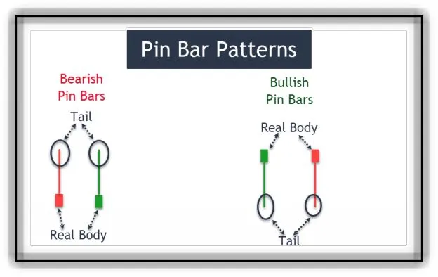
Image 4.19 – Pin Bar Patterns
Again this pattern has two types – 1) Bullish pin bars and 2) Bearish pin
bars.
Bullish pin bars are similar to the Hammer pattern. In both types of pin
bars, the color of the body doesn’t matter much. A longer tail is crucial as it
shows the rejection of prices at key levels.
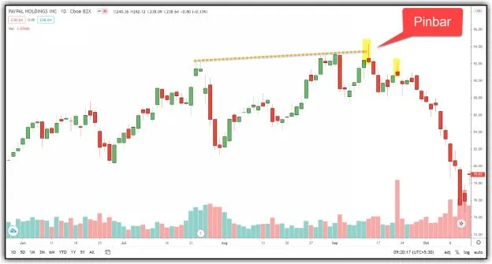
Image 4.20 – Bearish Pin Bar Pattern in PAYPAL Holdings
The above image shows an example of a Bearish Pin bar at the resistance trend line. It indicates the explicit rejection of the price to trade above the resistance trend line. After this point, the price didn’t show any signs of recovery and displayed a significant fall.
Traders should not use these candlestick patterns independently to take trades. These patterns should only be used at predetermined key price levels (either support or resistance).
Besides, don’t take the trade before the completion of the pattern. For example, if you are using a 1-hour timeframe, and after 30-45 minutes, if it is looking like any of the above-mentioned candlestick patterns, don’t opt for the trade immediately. Because the pattern might negate or change in the remaining time. It’s always better to plan a trade after the completion of the candlestick pattern.
It’s always better to finalize a trading system and then to apply these candlestick patterns. Otherwise, a trader loses control of trading and ends up with many losing trades every day.